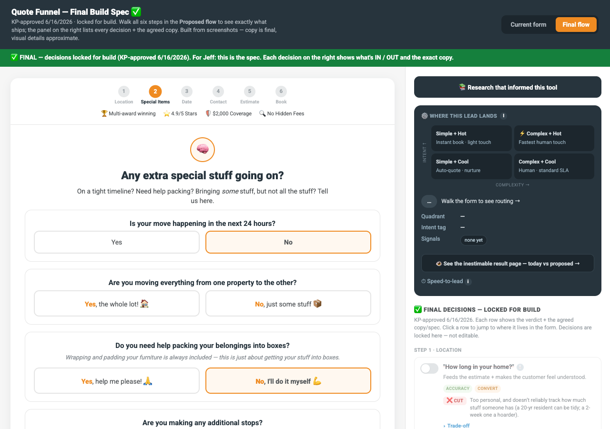
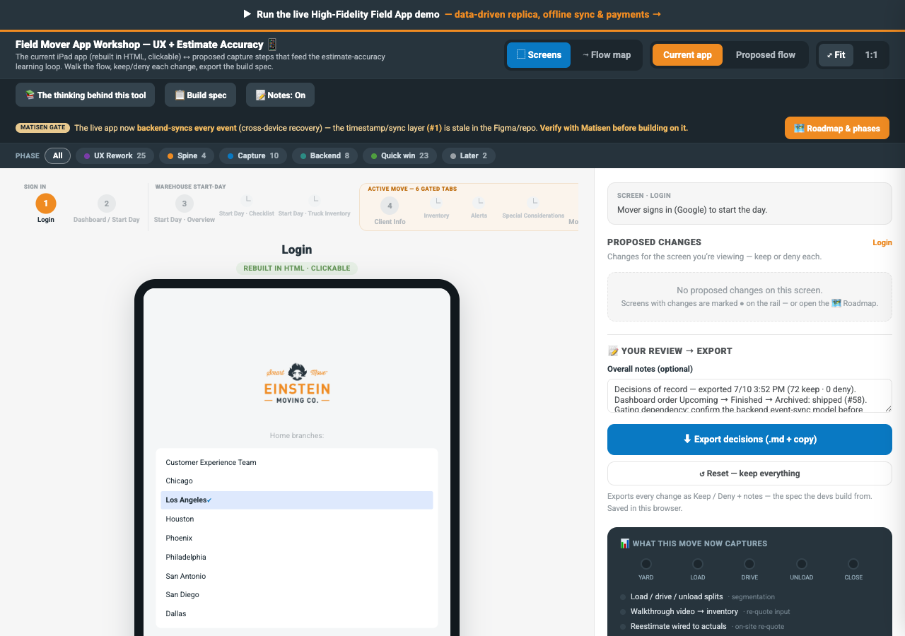
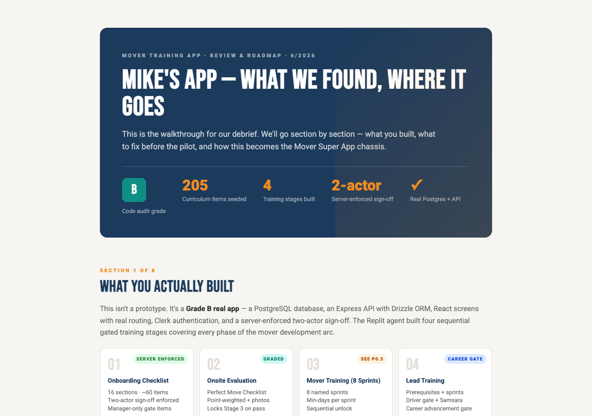
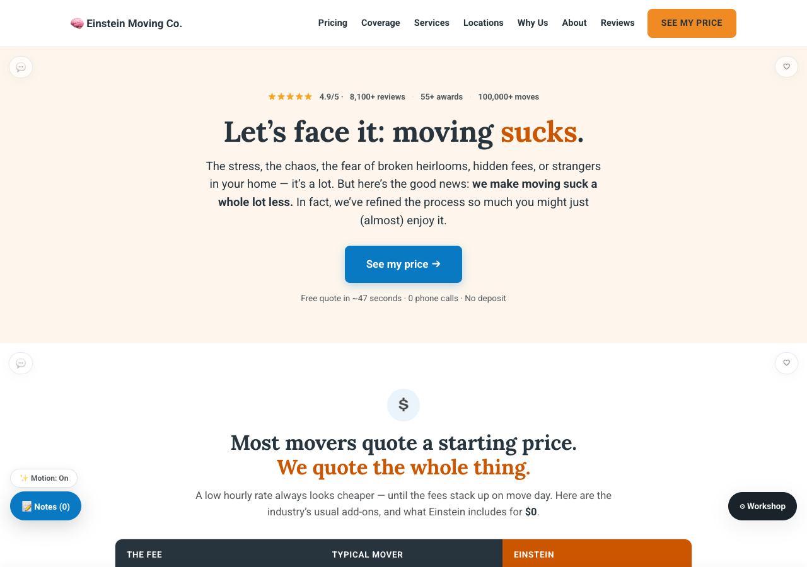

01The Smarter Quote Form
What it is
We added a small set of new questions to the online quote form — things like why someone is doing a partial move (storage, renovation, college, multi-stop). Every answer flows through to EMMA and to the manager reviewing the quote, even when the move can't be auto-estimated.
What's in it for you
- Fewer surprise scopes on move day — the customer told us up front what kind of move this really is.
- Better-qualified leads reach the sales team, with the "why" already attached.
- Every answer feeds estimate accuracy — the more moves we collect, the better the quotes get.
What's coming
Right now we're in collect-and-learn mode (~1,000 moves), then we open up more auto-estimable move types. Speed-to-lead work is next — answering a quote within 5 minutes makes a customer ~21× more likely to book.

02The Field Mobile App
What it is
The app that runs the job in the field — dispatch, job details, and stage-by-stage timing: how long the load took, how long the drive took, how long the unload took. A much more intuitive flow for movers running the job. Live demo in the room.
What's in it for you
- Load, drive, and unload times per job are the unlock we've needed to improve the estimate algorithm itself — quotes get more accurate and fairer to crews as the data builds.
- Problems get flagged during the move, not discovered after — earlier help on jobs going sideways.
- Less paperwork, faster invoice closure — and a flow that's built around how movers actually run a job.
What's coming
As the timing data accumulates, the estimate algorithm improves with it. There's a long list of wins stacked behind this one — Matisen walks the roadmap in the room.

03The Mover Training App
What it is
A training app built by us, for us — the full mover curriculum on your phone, with training videos hosted right alongside the written instruction, sign-offs, an in-app SOP wiki, and soon driver training too. It's been live across all of DFW/Tampa for three weeks with zero bugs.
What's in it for you
- You always know exactly what to learn next and what stands between you and your next promotion.
- Watch it, then do it — every skill comes with video instruction, not just a doc.
- SOPs live in the app — no more hunting for the right doc or asking three people.
- One platform carries you from new mover → driver → lead. Your progress follows you.
What's coming
Company-wide rollout is the leading candidate for the Q3 training theme. Performance management and your early check-ins (days 7/12/30/45/60) will run through the app too — so feedback lands on schedule, not when someone remembers. Also on the roadmap: an estimate-this-job training game and badges.

04Hiring for Culture — New Interviews
What it is
Starting August 1, trial days are gone. In their place: culture-based virtual phone interviews run by the Employee Experience team, and competency-based in-person interviews run by BMs — with real interview training to back it up.
What's in it for you
- No more burning a crew slot on a trial-day no-show.
- The culture screen happens before a candidate reaches your branch — you interview people who already fit.
- BMs get trained on structured interviewing — a skill you keep for your whole career.
What's coming
Application tightening (we get ~17,000 applicants — the funnel is getting smarter, not just bigger) and continued tuning of the tested culture questions.
"Tell me about a time you went out of your way for someone when nobody asked you to."
Listen for: specifics, not slogans. Real names, real moments.
"Walk me through the hardest physical job you've done. What did you do when you hit a wall?"
Listen for: ownership language — "I figured out" vs "they made me."
"Describe a teammate you'd work with again in a heartbeat. What made them that person?"
Listen for: whether they value what we value.
SAMPLE CARDS — Albert-drafted format ideas. At redline, Anne confirms which of her tested questions actually get swapped in — and which are shareable outside her team at all.
05Call Grading — Coaching at Scale
What it is
Real sales calls, graded against a shared rubric — so every rep gets specific, personal coaching instead of generic advice. Amanda's team owns the pipeline and the rubric.
What's in it for you
- This is a coaching tool, not a scoreboard — graded calls turn into 1:1 feedback that makes you better at a skill that pays.
- Better calls → better conversions → fuller trucks → more hours for crews.
- Down the road, grading connects to estimates and actuals, so we learn which call habits produce accurate quotes.
What's coming
Growing the share of real sales calls graded, tying grades to estimate accuracy once the mobile app's actuals land, and using calls to spot magic moments worth celebrating.
06The Chatbot Upgrade
What it is
The website chatbot is getting real AI. Our old platform, Leadferno, had none built in — and chat is a big slice of our inbound pipeline, which meant real people spent their day manning FAQs and routine questions. The new bot handles those itself and hands off the conversations that actually need a human.
What's in it for you
- Fewer people tied up monitoring the chat channel — that bandwidth goes to answering sales calls and working directly with customers.
- When a chat does reach you, it arrives qualified and with context instead of starting from zero.
- Customers get instant answers around the clock — warmer leads in the morning queue.
What's coming
This is a shared Amanda + Matisen target heading into Q3 — rollout details land after the QGR.
07A Real Finance Department + AI Across Leadership
What it is
Finance: the Prosper transition is nearly complete — a real finance department with monthly closes on a modern system. Margin meetings are resuming, and managers will get new branch-level reports built for their role. AI: every Roundtable leader now works with an AI chief of staff, and a growing set of live dashboards keeps goals, fleet, and sales visible in real time.
What's in it for you
- Branch reports that actually show your branch's story — and where your decisions move the number.
- Margin meetings mean you see the scoreboard regularly instead of once a quarter.
- Your leaders answer faster and drop fewer balls — the AI works for them so requests don't sit in an inbox.
What's coming
Margin meeting cadence restarts, role-tailored reporting for RMs and BMs, and more tools graduating from leadership to branch level as they prove out.
08The New Website
What it is
A full redesign of einsteinmoving.com — crisper, more professional, and built to sell the Smart Move System and our value the way they deserve: complete and honest pricing, the care standard behind every move, and the proof to back it up. Designed with our agency partner Kickpoint.
What's in it for you
- A site that converts better means more booked moves — fuller trucks, more hours, more tips.
- Customers arrive already understanding how we price and what's included — fewer awkward move-day conversations.
- The reviews and proof on the site are your work — 2,400+ reviews mined for the stories it tells.
What's coming
Design wraps with Kickpoint, then the development build. Sneak peek in the room.
